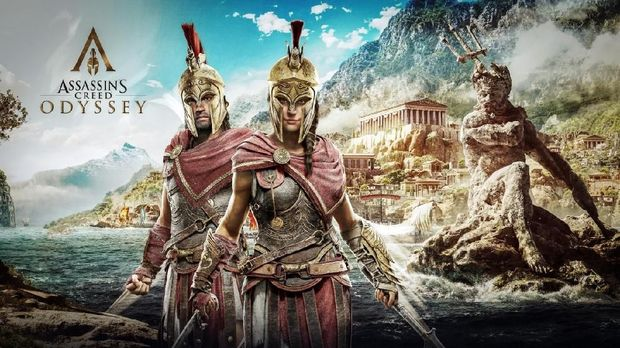
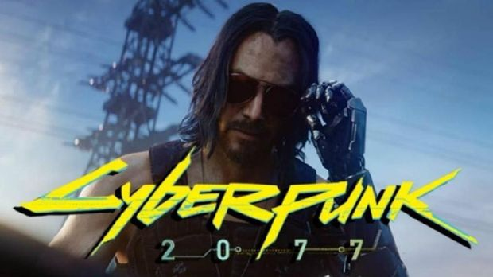
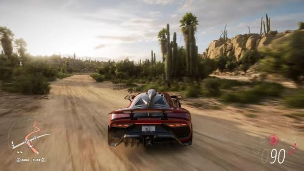
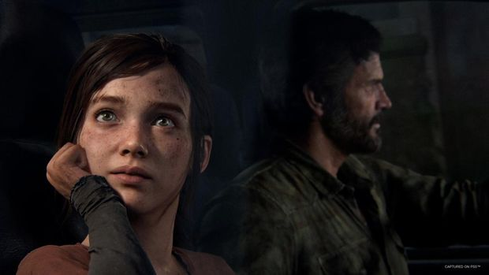
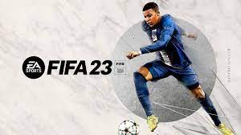

HOME
Rekomendasi Game
MY PROFILE
HOME
Jika kamu merasa hari libur membosankan karena hanya diisi dengan menonton televisi atau membuka sosial media, bermain game bisa menjadi salah satu kegiatan untuk mengisi hari libur. Perkembangan game tumbuh secara cepat dengan kualitas grafik lebih realistis seperti sedang menonton film. Selain itu game yang dirilis juga memiliki fitur serta alur cerita menarik sehingga tidak membosankan jika dimainkan untuk mengisi hari libur detikers. Selain memainkan di konsol permainan, kamu juga bisa memainkan game di personal computer (PC). Jika detikers tidak memiliki koneksi internet yang cukup baik untuk memainkan game online, berikut ini rekomendasi game PC offline dengan grafik realistis.
1. Assasins Creed Odysey

Game yang dirilis oleh developer Ubisoft pada tahun 2018 dengan tipe action RPG ini mengusung tema pembunuh bayaran. Seri Assassin's Creed Odyssey melengkapi cerita dari seri Assassin's Creed sebelumnya yang juga bertipe action RPG. Berbeda dari seri sebelumnya, Assassin's Creed Odyssey memiliki latar belakang cerita pada 431 sebelum masehi. Seri ini bercerita tentang perang Peloponnesian yang merupakan peperangan antar kota-kota di Yunani kuno. Cara bermain Assassin's Creed Odyssey tidak jauh berbeda dengan versi sebelumnya, namun terdapat beberapa fitur tambahan seperti grafis yang dibuat sangat realistis, detail, serta pencahayaan yang indah.
2. Cyber Punk 2077

Game tipe RPG yang dirilis pada 2020 ini memiliki latar belakang cerita di Amerika Serikat tahun 2077. Cyberpunk 2077 bercerita soal kehancuran Amerika secara de facto dan seluruh kota di Amerika dikuasai oleh geng serta mafia perusahaan multinasional. Cyberpunk 2077 merupakan game yang direkomendasikan untuk detikers yang ingin menikmati sensasi berpetualang di tahun 2077, karena memiliki fitur first person view serta dilengkapi oleh cerita yang tidak membosankan.
3. Forza Horizon 5

Jika kalian menyukai game balap mobil dengan tema jalanan umum, Forza Horizon 5 cocok untuk dimainkan. Memiliki koleksi mobil yang lebih lengkap dari versi sebelumnya, game yang dirilis pada 2021 ini memiliki latar belakang di negara Meksiko. Forza Horizon 5 memiliki fitur berkendara bebas atau open world dengan bermacam pertandingan balap seperti rally, offroad, balap sirkuit, dan balapan di jalan umum. Peningkatan performa Forza Horizon 5 dibandingkan versi sebelumnya yaitu dari sisi pengendalian mobil dan grafik game yang hampir mirip dengan dunia nyata.
4. The Last Of Us Part 1

Game aksi petualangan dengan tema zombie terbitan Sony Interactive Entertainment ini, merupakan seri game yang pernah rilis pada tahun 2013 dan dibuat ulang menjadi lebih menarik di tahun 2022. The Last of Us Part 1 menceritakan wabah yang terjadi di Amerika karena jamur bernama Cordyceps membuat manusia menjadi agresif seperti zombie jika terinfeksi. Memiliki fitur game seperti parkour dan tembak menembak, serta dilengkapi oleh alur cerita yang sangat menarik membuat game ini menjadi rekomendasi untuk dimainkan. Peningkatan dari segi grafik tentu tidak usah diragukan, game yang dirilis ulang ini memang memunculkan fitur grafik yang sangat realistis.
5. FIFA 2023

Game bola paling populer yang rilis pada tahun 2022 ini menjadi rekomendasi selanjutnya bagi kamu yang ingin bermain secara multiplayer dengan teman. FIFA merupakan game bola yang rilis setiap tahunnya memberikan fitur menarik di Fifa 2023 ini seperti technical dribbling, power shots, dan accelerate. Selain menambahkan fitur baru yang menarik, FIFA 2023 juga menambahkan fitur hypermotion yang membuat permainan terasa lebih realistis.
My Profile
Nama : Alvin Kurnia Ramadhan
Tanggal lahir: 24 Oktober 2005
Alamat : Jl.Cijagra Rt.05 Rw.11
Email : AlvinKurniaramadhan@gmail.com